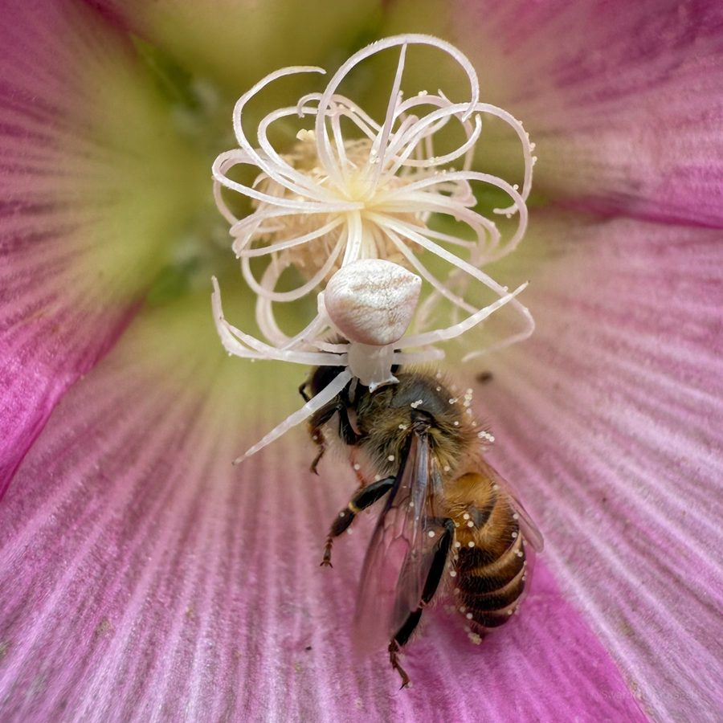

क्रैब मकड़ीCrab Spider Thomisus
Thomisus unidentatus · Thomisidae · SPD-0032

- Scientific name वैज्ञानिक नाम
- Thomisus unidentatus C.L. Koch, 1845
- Family कुल
- Thomisidae
- Hindi हिंदी
- क्रैब मकड़ी
- Local names स्थानीय नाम
- crab spider thomisus, thomisus
- Status here यहाँ की स्थिति
- native
- Movement आवागमन
- Resident, here all year
- Known from कहाँ दर्ज
- Others have published records from the wider Awadh–Purvanchal plain, none yet from Basti–Ayodhya अवध–पूर्वांचल से दूसरों के प्रकाशित अभिलेख, बस्ती–अयोध्या से अभी नहीं
- IUCN IUCN
- not evaluated
- Review समीक्षा
- audited and independently read
When to look कब देखें
Present all year. साल भर मौजूद।
Uses and possibilities उपयोग और संभावनाएँ
Drawn from the documented uses in the profile below, where each is labelled traditional, current or a research lead. All uses →
क्रैब मकड़ी / Crab Spider Thomisus
Thomisus unidentatus C.L. Koch, 1845 — Thomisidae
क्रैब मकड़ी — फूलों पर बैठी एक चपटी, बग़ुला-के-आकार की मकड़ी जो पक्षों में फैली हुई होती है। सफ़ेद, हरी, गुलाबी या पीली — फूलों का रंग पहचानती है और वैसे ही रंग बदल जाती है। शिकारी के लिए इंतज़ार करने का एक छत्पति। मधुमक्खियों, तितलियों और अन्य कीटों का शिकार करती है।
Quick Identification त्वरित पहचान
| Feature | Description |
|---|---|
| Size | 6–10 mm body length; legspan 15–20 mm |
| Body | Flat, crab-like; legs spread sideways |
| Colour | Highly variable — white, pink, green, yellow, brown; matches flower colour |
| Posture | Splayed, sitting flat on flower; front legs raised, ready to grab |
| Hunting style | Ambush predator; waits motionless on flowers |
| Habitat | Flowers, flower buds, low vegetation |
Field tip: Flat, sideways-splayed spider on flowers — legs held to the sides like a crab. Colour matches the flower. Often nearly invisible due to camouflage. Watch for sudden movement as prey approaches.
Morphology आकारिकी
| Feature | Measurement |
|---|---|
| Body length | 6–10 mm |
| Legspan | 15–20 mm |
Cephalothorax: Flat, widened laterally. Colour variable, matching substrate.
Abdomen: Oval, flattened, mobile; colour changes seasonally and between individuals.
Legs: Front legs (I and II) longer and more prominent than rear legs (III and IV); held extended to the sides, front legs raised and ready to strike. Legs banded or solid-coloured.
Eyes: Six eyes (not eight) — a key Thomisidae character. Posterior rows have no median eye.
Colouration: Highly variable. White, pink, green, yellow, or brown individuals exist within populations. A single spider can sometimes change colour over a few days. This colour polymorphism or plasticity aids in camouflage on different flowers.
Ecological Role पारिस्थितिक भूमिका
Flower-specialist ambush predator: Thomisus unidentatus sits motionless on flower petals, waiting for insects to visit. When prey approaches (attracted to the flower), the spider strikes with remarkable speed, grabbing the insect with its front legs.
Prey: Bees, butterflies, flies, small beetles, and other flower-visiting insects. Large females can capture honey bees and bumble bees.
Pollinator predator: Because it hunts on flowers, it is a predator of pollinators — both beneficial and harmful from a crop perspective. The trade-off: some insect pest predation, but also loss of pollinator biomass.
No web-building: Unlike orb-weavers, crab spiders do not build webs. They are sit-and-wait ambush hunters.
Life Cycle / Phenology जीवन चक्र
| Month | Event |
|---|---|
| Mar–May | Spiderlings emerge; climb plants; seek flowers |
| May–Sep | Rapid growth; hunting on flowers; feeding |
| Aug–Oct | Adult size; mating |
| Sep–Nov | Female lays 1–2 egg sacs (brown, 4–6 mm, 30–60 eggs) on leaf undersides or protected spots |
| Nov–Feb | Overwintering as eggs in protected microhabitats |
Single annual generation; more abundant in warm years with high flower diversity.
Agricultural / Human Relevance कृषि प्रासंगिकता
Pest control: Significant predator of flower-visiting pest insects — small flies, thrips, small beetles, and some moth larvae. In flowers, it provides natural pest regulation.
Pollinator loss: However, because it preys on bees and butterflies (beneficial pollinators), it also has a negative impact on crop pollination. The balance varies with local conditions.
Minimal impact on crops: On vegetables and field crops, the presence of Thomisus is usually neutral or beneficial — most crop pest insects are not strong pollinators.
Human safety: Harmless; does not bite unless severely provoked. No venom capable of harming humans.
Expected Locally स्थानीय रूप से अपेक्षित
Not a field record. Written from published accounts for eastern Uttar Pradesh. No confirmed local sighting yet — if you have seen it, that is what the atlas needs.
अभी तक स्थानीय पुष्टि नहीं। यह विवरण प्रकाशित स्रोतों से है, किसी अवलोकन से नहीं।
Thomisus unidentatus is expected on flowers and low vegetation March through November. More abundant during flowering season when flowers are diverse. Particularly common on white and pink flowers. Gardens and fields with flowering crops or weeds will host populations. Colour polymorphism allows individuals to match whatever flowers are locally dominant.
Distribution वितरण
Global range: Tropical and subtropical Asia — widespread from India eastward.
In India: Common across the country on flowering plants.
In Uttar Pradesh: Recorded wherever flowers are available.
In Basti district / eastern UP: Expected on flowers during warm months.
Research Questions शोध प्रश्न
- How quickly can Thomisus change colour to match a new flower?
- क्या इस मकड़ी का रंग फूलों के रंग पर निर्भर करता है, या क्या यह आनुवंशिक है? (Is colour dependent on flower colour or genetic?)
- How does the presence of Thomisus affect pollinator visitation rates on flowers?
- What is the capture rate (insects per day) on different flower types?
- Do different colour morphs have different hunting success rates?
Similar Species मिलती-जुलती प्रजातियाँ
| Spider | Distinction |
|---|---|
| Other Thomisus species | Similar morphology; nearly impossible to distinguish without close examination of chelicerae and other details |
| Flower Crab Spiders (Misumena vatia) | Larger; different geographical range (Europe); similar ecology |
Field rule: Flat, crab-like spider on flower with legs splayed sideways, colour matching the flower, = Thomisus unidentatus.
Taxonomy & Classification वर्गीकरण
Original description. C.L. Koch, 1845 in Die Arachniden.
Subspecies. Monotypic.
Family and order placement. Order Araneae, family Thomisidae (crab spiders). Characterized by flat body, sideways posture, and six eyes. Genus Thomisus contains about 100 species globally.
Phylogenetic notes: Thomisidae are among the most derived spiders, with significant adaptations for ambush hunting and colour camouflage.
IUCN status rationale. Not assessed; common and stable.
Photo Gallery फोटो गैलरी
No photos yet — add field photos to media/species/crab_spider_thomisus/ and run node scripts/sync_photos.js.
Photos wanted:
- Spider on white flower
- Spider on pink flower
- Spider on green vegetation
- Close-up showing colour variation
- Comparison of colour morphs
References संदर्भ
- Koch, C.L. (1845). Die Arachniden. Nürnberg.
- Tikader, B.K. & Biswas, B. (1981). Spider fauna of India. Zoological Survey of India.
- Nentwig, W., et al. (2024). Spiders of Europe. www.wsc.nmbe.ch.
- World Spider Catalog. (2024). Retrieved from: http://www.wsc.nmbe.ch
- Foelix, R.F. (2011). Biology of Spiders (3rd ed.). Oxford University Press.
- GBIF Occurrence Data — Thomisus unidentatus, tropical Asia (2000–2024). GBIF taxon key: [to be filled by script].
Source file: species/fauna/spiders/crab_spider_thomisus.md